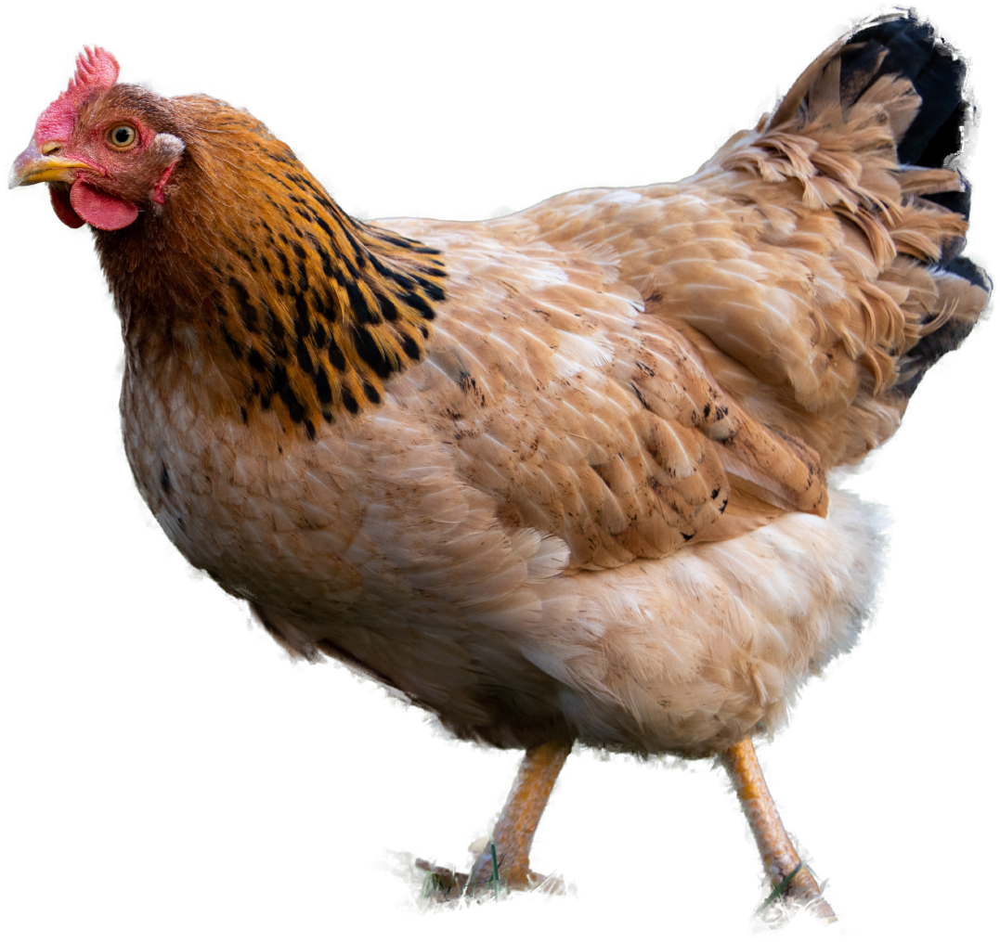

ĂN CHAY VÀ ĂN THUẦN CHAY?
Với đại đa số những người đã quen với chế độ ăn uống thông thường thì khi tiếp cận khái niệm Chay tịnh hay Thuần chay, họ thường đều có chung suy nghĩ.
Chế độ ăn thuần chay
Vì thế những người tiêu dùng có quan tâm đến phúc lợi động vật sẽ rất cân nhắc về việc mua trứng và họ chuyển sang dùng Trứng chay được làm từ tàu hủ ướp gia vị cũng là một quyết định rất hoà bình cho động vật.

Dù là bò đực hay bò cái. Vì khi đã quá chu kỳ cho sữa, thì các công ty sản xuất bơ, sữa, phô mai không thể sử dụng được chúng nữa, do đó các con bò sẽ được tận dụng cho ngành công nghiệp thịt. Nhưng may thay, vẫn có cách để cải thiện việc này, hiện đã có những doanh nghiệp sản xuất các sản phẩm sữa, bơ, phô mai từ nguyên liệu thực vật để phục vụ cho người ăn Thuần Chay.